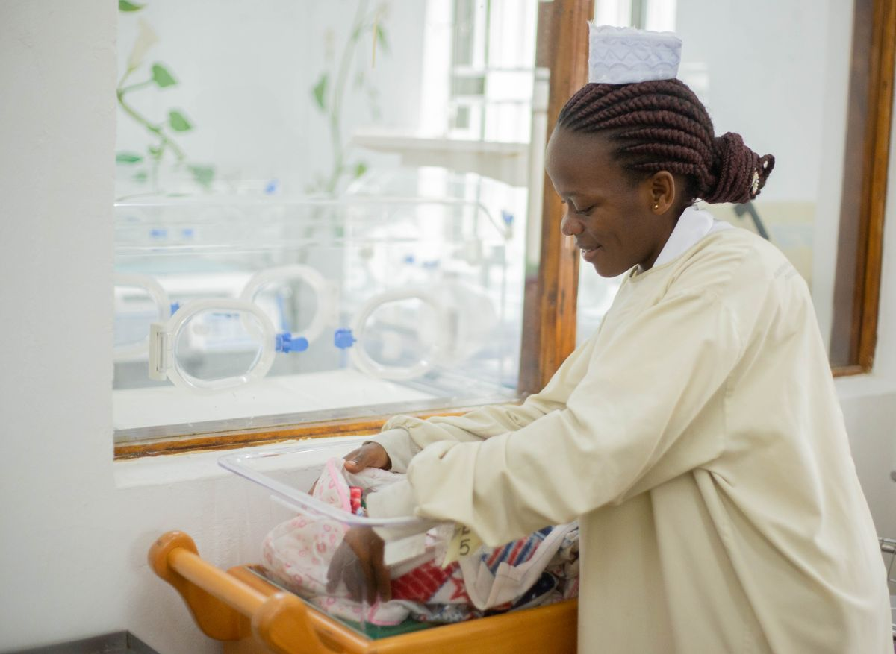

24-Hour Care for Cancer Patients, Accidents and General Medical Emergencies.
COC is more than a cancer emergency center. Our urgent care service is open to the entire community. You do not need to be a cancer patient to receive medical attention at Cameroon Oncology Center.
 Photo placeholder — COC facility with Urgent Care Emergency entrance and ambulance (images/urgent-care-hero.jpg)
Photo placeholder — COC facility with Urgent Care Emergency entrance and ambulance (images/urgent-care-hero.jpg)
Quality Care.
For Every Patient.
Every Day.
Anytime.
Urgent care for cancer patients at any stage of treatment
Urgent care for the whole community

Photo placeholder — nurse holding a newborn (images/maternity-emergency.jpg)Safe care for mothers and newborns
Over the past 7 years, COC has assisted with the delivery of 70+ babies who came to us through emergency care.
"New beginnings. Brighter tomorrows. For families. For Cameroon."
Fast. Organized. Comprehensive.
(CT, MRI, Ultrasound, X-ray)